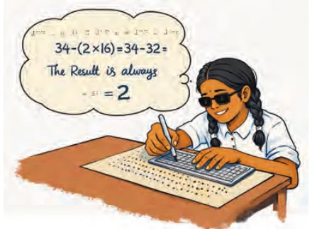
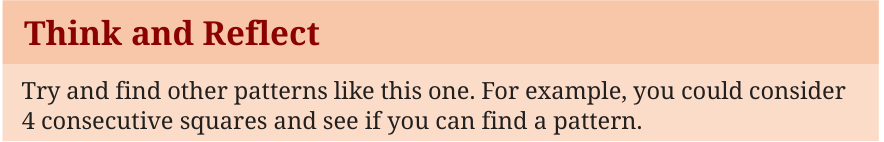

In earlier chapters, you learnt about linear polynomials and how they can be used to represent and solve real-life problems. You also studied linear equations and discovered how they describe relationships between quantities. In this chapter, we will take the next step by exploring algebraic identities. These are special mathematical rules that not only make it easier to simplify complicated calculations but also help us work efficiently with algebraic expressions. Let us begin by exploring a few simple patterns.
Example 1: Consider any three consecutive square numbers. For example, 1, 4, and 9. Add the smallest and the largest squares. Thus, \(1 + 9 = 10\). Then subtract twice the middle square from this sum. This leads to
\(10 - (2 \times 4) = 10 - 8 = 2\).
Now try the same process with another set of three consecutive square numbers. Say 9, 16, 25.

For example, consider the consecutive squares 25, 36, 49. Applying the same rule we get \((25 + 49) - (2 \times 36) = 74 - 72 = 2\). Repeat this process with other sets of three consecutive square numbers. The result always seems to be 2! The pattern may look surprising, but soon we will uncover the reason behind it using algebra.
Think and Reflect
Try and find other patterns like this one. For example, you could consider 4 consecutive squares and see if you can find a pattern.
